O livro do AnberNext
Como uma interface de portátil virou uma família de sistemas: três marcas, quatro temas, quatro tipos de aparelho e um cartão de jogos que serve todos eles. Contado pelas prévias que o Vitor aprovou, na ordem em que aconteceram.
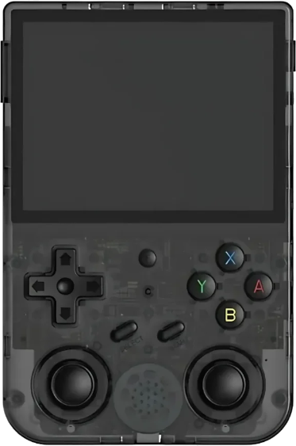
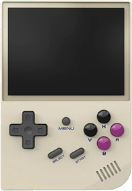
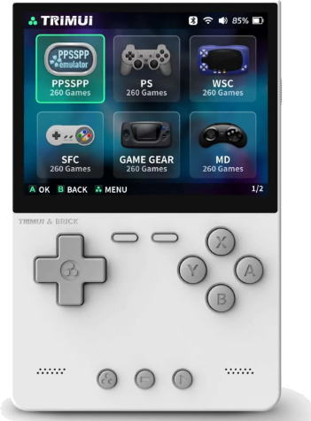
O ponto de partida
Tudo começou no Anbernic RG353V. A ideia era levar o NextUI, a interface limpa e rápida do TrimUI Brick, para um portátil da Anbernic, com um visual próprio. O AnberNext roda de um cartão micro SD só dele, ao lado do Android: segurando F ao ligar, o aparelho volta para o Android.
No primeiro dia o projeto ganhou repositório público, guia de instalação e um atualizador que roda no próprio aparelho, pelo Wi-Fi. O atualizador se recusa a gravar em qualquer lugar fora do cartão do AnberNext, e o cartão de jogos fica de fora por projeto.
Energia e bateria
As primeiras versões resolveram problemas de quem usa o aparelho todo dia. A v3.15 acabou com os reinícios sob carga: em bateria não cheia, abrir algo pesado derrubava a tensão e o RG353V reiniciava. A v3.16 fez todas as telas mostrarem a mesma porcentagem de bateria, conferida pela tensão real da célula.
A música entra no jogo
A v3.17 trouxe o AnberTunes, um player de música para o RG353V. Ele é um fork do Boombrick, de ujjwal313: o app e o trabalho por trás dele são do autor do Boombrick. O AnberTunes acrescenta o visual do projeto e o cartão "tocando agora".
A primeira prévia do projeto mostrou o player por cima do jogo, em três tamanhos: expandido, biblioteca e reduzido. O atalho L1+R1+X passa de um para o outro.

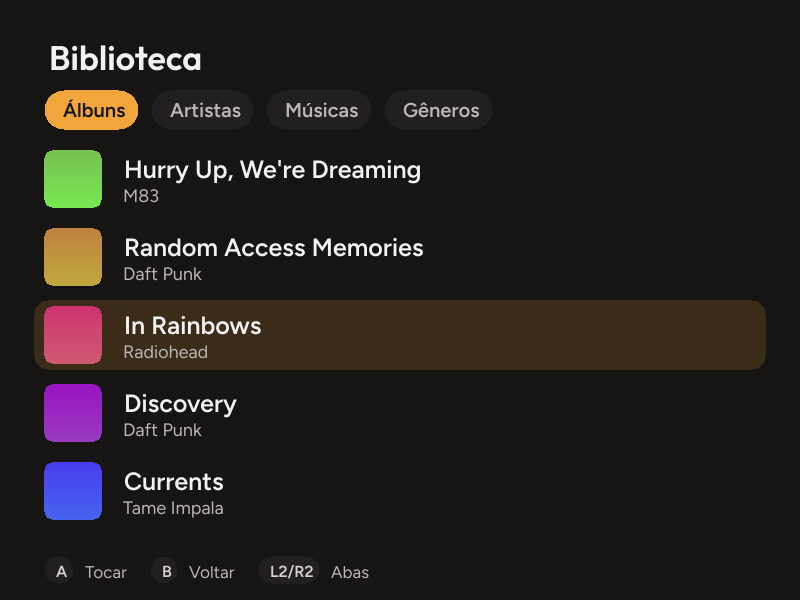
Depois vieram as versões que colocaram o player na tela de cada emulador pesado. Cada um desenha a imagem de um jeito, então cada um pediu uma solução própria.
| Versão | O que mudou |
|---|---|
| v3.25 · 03/11 | player no menu dos emuladores internos; direcional responde no primeiro toque |
| v3.24 · 30/10 | player também em Vulkan, no PSP e no Dreamcast |
| v3.23 · 30/10 | player na tela do Dreamcast |
| v3.22 · 30/10 | player na tela do N64, com os controles certos |
| v3.17 · 28/10 | AnberTunes chega pelo atualizador |
Neon Drive, a primeira cara
Com o sistema estável, a pergunta virou outra: que cara ele tem. A primeira resposta foi a tela de boot. Uma barra no gradiente âmbar da logo, uma frase de carregamento e a versão do sistema. As frases viraram marca do projeto: "soprando o cartucho", "inserindo a fichinha", "rebobinando a fita".
Uma marca para o Brick
No mesmo dia nasceu a identidade do BrickNext: um tijolinho âmbar em 2.5D, acento ciano, base índigo. Entre três ícones, ficou o combinado, com os pinos em cima e as juntas de alvenaria na frente.
Quatro direções
Antes de desenhar as telas, uma prévia mostrou quatro caminhos possíveis, cada um nas quatro telas que importam: escolher o console, dentro do console, o menu do jogo e o boot. Neon Drive (synthwave), Bloco (isométrico), Brick OS e Deck. A regra que veio dali ficou para sempre: nada é fixo, tudo é tema.
Neon Drive no aparelho
O Neon Drive saiu na frente. As prévias seguintes já não eram maquete: eram capturas do programa de verdade, rodando no PC com as fontes e imagens do cartão do Vitor. Primeiro a tela inicial, depois uma leva de ajustes (capa sem corte, cartão do AnberTunes animado, MÚSICA no menu), depois o menu do jogo, as Opções e os Ajustes.
A tela de boot também ganhou a versão definitiva: o grid e o sol sobem do escuro, o hexágono se desenha em âmbar, o letreiro entra letra por letra e a barra acompanha o boot de verdade.
O jeito de aprovar uma tela
Em 10 de novembro o projeto ganhou um método. Toda tela nova ou melhoria aparece primeiro numa prévia: cada tela no tamanho real do aparelho (640×480), animada, dentro de uma moldura, agrupada por onde vive e com um número fixo. O Vitor aprova pelo visual e pede ajuste citando o número. Só depois a tela vai para o código.
Será o nosso padrão pra criação e melhorias a partir daqui.Vitor, 10/11
A primeira prévia nesse formato foi a do Neon Drive, mostrando como cada tela estava e o que ganharia. Nela foram decididas as linhas da Aparência que valem até hoje: Tema, Tela inicial (carrossel, lista ou grade), Ícone dos consoles e Biblioteca de jogos.
Quatro temas
O Neon Drive ganhou três irmãos. O Bloco veio da direção isométrica: o tijolo da marca deixa de ser logo e vira o próprio aparelho. Depois o Grafite, com cara de portátil de PC, e o Fósforo, um terminal antigo de uma cor só. Os quatro são originais de propósito, sem nomes ou logos de outras marcas.
Trocar o tema em Ajustes muda tudo de uma vez: tela inicial, biblioteca, menu do jogo, Ajustes e boot. Cada tema guarda as próprias escolhas de layout.
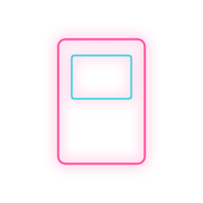
Neon Drive
Synthwave: horizonte, grade em fuga e tubos de neon. Escreve em maiúsculas.
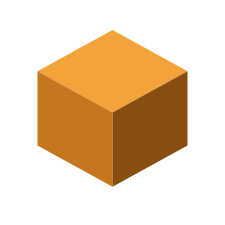
Bloco
Blocos isométricos que giram. Os consoles viram cubos; as capas, lajes.
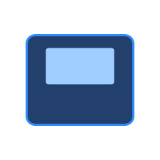
Grafite
Cartões limpos, cara de portátil de PC, com um azul só.
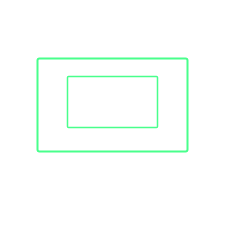
Fósforo
Terminal de tubo: tudo é traço, com cursor piscando. Verde, âmbar ou branco.
Do PC para o aparelho
Aprovadas as prévias, os quatro temas foram para o cartão principal do RG353V em levas, testadas pelo Vitor uma a uma. Entraram o idioma (português ou inglês), a bateria real na tela inicial, títulos longos rolando, capas sempre inteiras e as conquistas no Bloco.
O aparelho cobrou o que o PC esconde. No Grafite, a tela inicial fazia mil pedidos de desenho por quadro; no Fósforo, os Ajustes levavam 155 milissegundos por quadro. A regra virou: medir cada parte da tela antes de chutar. Depois do corte, o Fósforo caiu para cerca de 20 milissegundos.
Estas são as telas reais, tiradas do próprio sistema:
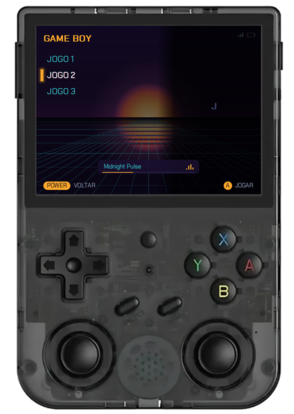
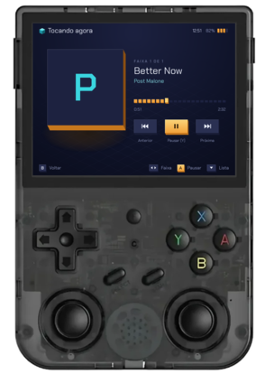
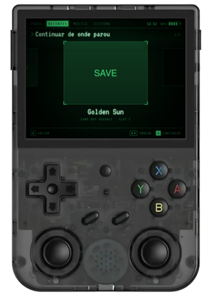
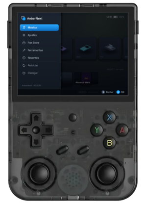
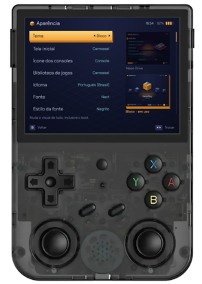
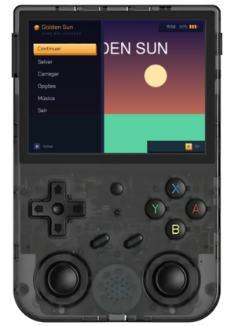
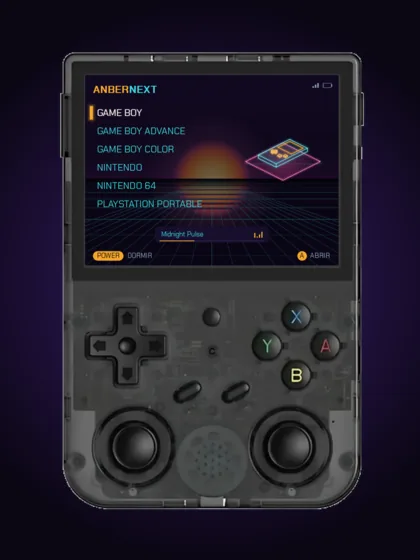
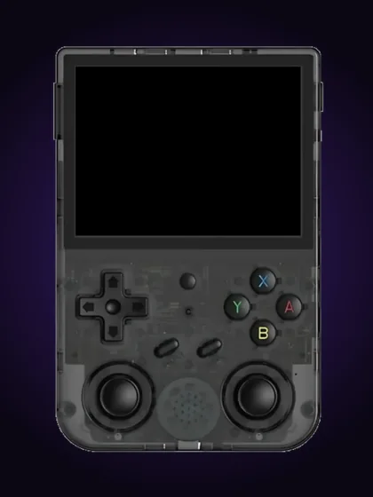
A linha H700
O segundo aparelho foi o RG35XX Plus, da linha H700 da Anbernic. O plano aprovado foi o mesmo do RG353V: um cartão de boot só do AnberNext, com o sistema de fábrica intacto. Uma imagem única para os dois chips seria impossível, porque os carregadores de cada um ocupam o mesmo trecho do cartão.
Na noite de 11 de novembro o RG35XX Plus ligou pela primeira vez com o AnberNext. Dois dias depois saiu o AnberNext H700 v1.0, com imagem para sete modelos.
| Modelo | Situação em 13/11 |
|---|---|
| RG35XX Plus | testado de ponta a ponta no aparelho |
| RG35XX H, RG35XX SP, RG40XX H, RG40XX V, RG CubeXX, RG28XX | imagem própria, com a inicialização e o kernel de cada modelo; aguardando relatos |
O que ele faz
- Os quatro temas, como no RG353V.
- N64, Dreamcast, PSP e Nintendo DS. O DS usa o DraStic, com os saves em
Saves/NDS/drastic. - Saída HDMI, com o som indo junto para a TV.
- Atualização pelo Wi-Fi: cada modelo recebe só os seus arquivos e recusa os de outro.
- Um relatório no cartão,
relatorio-h700.txt, para quem quiser ajudar com outros modelos.
Dois tropeços
No PSP, só um botão de ombro respondia. Cada modelo numera os botões de um jeito, então o sistema passou a ler um mapa de botões por modelo.
Agora deu certo parceiro! O que falta?Vitor, depois da correção do PSP
Nos Ajustes do RG35XX Plus, o B não saía da tela, porque cada aperto era lido duas vezes. Depois da correção, o Vitor confirmou: "deu certo, funcionou".
BrickNext
O BrickNext é o NextUI do TrimUI Brick com o visual do AnberNext. O repositório nasceu em 3 de novembro, ganhou o logo aprovado e o atualizador pelo aparelho no dia 4, e em 13 de novembro recebeu a v1.1.0, com os quatro temas, a marca BrickNext em tudo e os LEDs no tema.
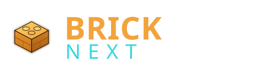
A tela de abertura no cartão de uma partição só
O Vitor avisou que o cartão do Brick tinha uma partição só, e que talvez a animação não coubesse. Ela coube, mas não aparecia: a tela do Brick só mostra o que passa pelo mesmo caminho do menu. A animação foi refeita por esse caminho.
Agora apareceu a bootscreen, ficou dahora.Vitor, 13/11
LEDs que seguem o tema
Depois do logo da TrimUI entra a animação do tema, e os LEDs acendem nas cores dele, com ou sem a chave de mute. Em Ajustes > Aparência > LEDs dá para escolher Seguir o tema ou Personalizado, que traz todos os controles do LED Studio. As cores começaram pastéis e foram trocadas pelas cores vivas de cada tema.
| Tema | Centro | Laterais | Teclas |
|---|---|---|---|
| Neon Drive | FF8C00 | FF0080 | 00E0FF |
| Bloco | FF8C00 | 00E0FF | |
| Grafite | 0050FF | 00A0FF | |
| Fósforo | 00FF30 | FF9000 | FFFFFF |
Agora ficou show demais parceiro!Vitor, sobre a v1.1.0
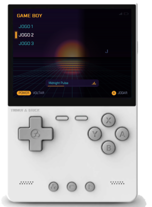
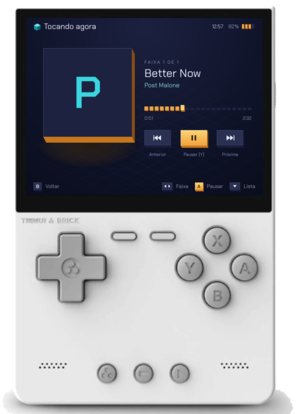
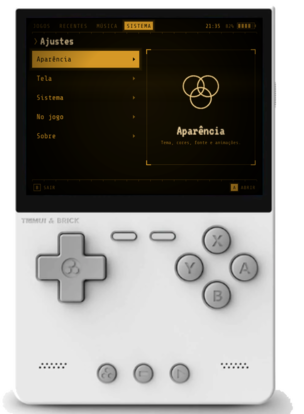
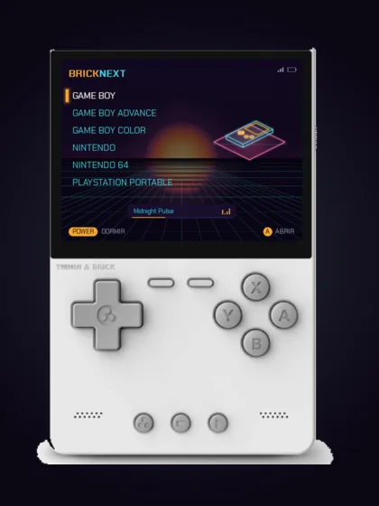
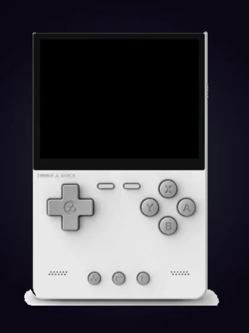
As páginas do projeto
Os repositórios retrotiv/AnberNext e retrotiv/BrickNEXT ganharam páginas de produto: uma tabela de qual arquivo baixar, o aparelho com um tema animado na tela e uma vitrine das funções em telas reais.
A primeira versão usou desenhos dos aparelhos. O Vitor achou estranho e pediu as fotos reais. Os sites dos fabricantes bloqueiam acesso automático, então ele mesmo salvou as fotos, e elas viraram a moldura das telas. Depois vieram a versão em português do Brasil, como primeira língua, e o crédito ao Boombrick e a ujjwal313 em todo lugar que fala de música.
Preciso das imagens reais dos consoles em PNG, desse jeito ficou meio estranho.Vitor, 13/11
MiniNext
O último da família é o Miyoo Mini, com 128 MB de memória. A versão leve mantém os quatro temas, mas troca o que pesa por imagens prontas: fundos e desenhos de console foram recortados da própria prévia aprovada, e só texto e formas lisas são desenhados na hora.
A prévia teve 28 telas e um Mini que funciona na própria página. Ela também mostra as quatro versões de cada tela lado a lado.
Gostei demais! Bora fazer virar realidade e já taca no cartão.Vitor, 13/11
No cartão
No cartão do Brick já havia um sistema para o Mini, feito antes num outro computador, que rodava bem na tela do Mini do Vitor. O MiniNext foi montado em cima dele. A primeira versão traz a tela inicial nos três jeitos, a biblioteca com capas, o menu do botão MENU, a Aparência, os recentes no SELECT e a barra de volume e brilho no tema.
Se o menu novo cair, o Mini abre sozinho o menu antigo e tenta o novo de novo no próximo boot. Ainda falta o teste no aparelho, e depois vêm o menu do jogo no tema, a tela de abertura e a música.
Um cartão para todos
Os quatro sistemas leem os jogos do mesmo micro SD. O Brick e o Mini ligam direto dele. Os Anbernic ligam do próprio cartão de boot, no slot 1, e leem este no slot 2 só como biblioteca. Os saves de bateria são os mesmos em todos: dá para parar no Mini e continuar no Brick. Os estados salvos ficam separados, porque cada aparelho roda versões diferentes dos emuladores.
O que aprendemos
Cada lição abaixo custou horas para descobrir. Elas ficam guardadas para o próximo aparelho não tropeçar no mesmo lugar.
| Lição | O que acontecia |
|---|---|
| Atualizar só para versão mais nova | cartões com sistema mais novo eram rebaixados ao ligar com Wi-Fi |
| Cada modelo H700 numera os botões do seu jeito | no PSP quase nenhum botão respondia |
| O controle não pode ser lido duas vezes | o B não saía dos Ajustes no RG35XX Plus |
| A tela do Brick só mostra o que passa pelo caminho do menu | a animação de boot ficava invisível |
| O NextUI apaga os LEDs ao abrir | as cores do tema apareciam e sumiam |
| Medir antes de chutar | Grafite e Fósforo pesavam no aparelho e não no PC |
| Trabalhar numa pasta fixa, com cópia de cada cartão | a pasta temporária sumiu com o disco cheio |
| Dizer "ficou faltando" quando ficou faltando | uma tela da prévia foi chamada de limite, quando só não tinha sido portada |
| Dar crédito a quem fez o original | o player vem do Boombrick, de ujjwal313 |
Todas as prévias
As prévias vão junto com este livro, abertas e animadas, e qualquer pessoa abre sem conta. Cada uma é a fonte das imagens dos capítulos.
| Data | Prévia | O que mostra |
|---|---|---|
| 13/11 | MiniNext no Miyoo Mini | 28 telas nos quatro temas e um Mini simulado |
| 10/11 | AnberNext Neon Drive | o Neon Drive como está e o que ganha |
| 10/11 | AnberNext Bloco | o tema Bloco, tela por tela |
| 10/11 | AnberNext Grafite | o tema Grafite, tela por tela |
| 10/11 | AnberNext Fósforo | o tema Fósforo, tela por tela |
| 09/11 | AnberNext Bootscreen | a animação de boot e o seletor de cor |
| 09/11 | Opções e Ajustes | o programa de Ajustes real, no neon |
| 06/11 | Menu Preview | menu do jogo com a bateria nova |
| 05/11 | NeonDrive | leva de ajustes do launcher |
| 04/11 | Preview Neon Drive | a tela inicial capturada do launcher |
| 04/11 | Direções do BrickNext | as quatro direções visuais |
| 03/11 | BrickNext Logo | a identidade do BrickNext |
| 03/11 | Bootscreen AnberNext | a primeira tela de boot |
| 29/10 | Player AnberTunes | o player por cima do jogo |
As datas são da última atualização de cada prévia.
Construído sobre o trabalho dos autores do NextUI e do MinUI, do dArkOS, do Knulli e do Batocera, do DraStic e do Boombrick. Fotos dos aparelhos: Anbernic e TrimUI. Um projeto da comunidade, sem ligação com os fabricantes.